Habitree – Native Habit-Tracker App
Role: UX/UI Designer & Researcher
Duration: July – August 2025
Tools: Figma, FigJam, Miro, Google Forms, Canva
HABITREE is a cross-platform mobile app that helps users build healthier routines through mindful habit formation. Designed for both iOS and Android, it offers a calming, intuitive experience that encourages consistency without stress or guilt.
Target Audience
Adults aged 20–40, often students or professionals, who are motivated to improve their well-being but feel overwhelmed by rigid productivity tools.
Project Timeline
User Personas
User Flows
Habitree UX Flow – New User
Habitree UX Flow – Returning User
Habitree UX Flow – Add Habit
Understanding the Problem
Problem
Most habit trackers emphasize productivity over well-being. They often rely on streak pressure and overwhelming data, making users feel discouraged after a missed day.
Objective
Design an experience that motivates users to build daily habits in a more compassionate, human-centered way — with simplicity, ease of use, and visual encouragement at the core.
Solution
A mobile habit-tracking app that allows users to set small goals, select supportive habits, and visualise their progress through a growing tree metaphor — turning daily actions into long-term growth.
I began by exploring existing habit-tracking apps to understand their strengths and weaknesses. My focus was on identifying opportunities to make the experience more supportive and minimalistic, avoiding overwhelming users with unnecessary features. Early user feedback highlighted the need for a simple, warm, and approachable design.
Supported Habit-Building Experience
Build healthy habits with someone by your side.
Wellness isn’t a solo mission.
Screen Evolution
iOS Home Screen with Stats
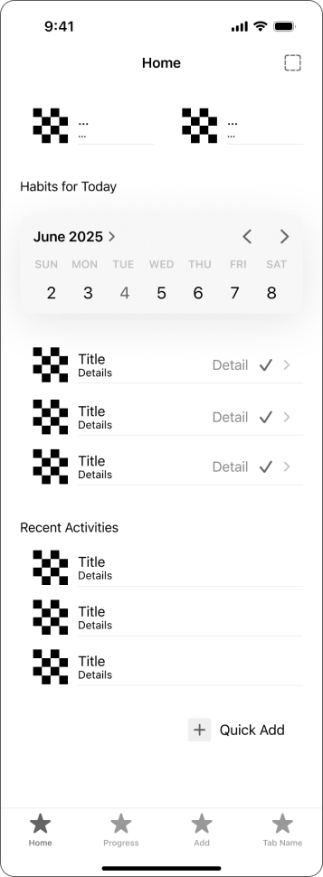 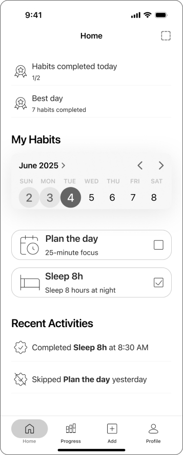 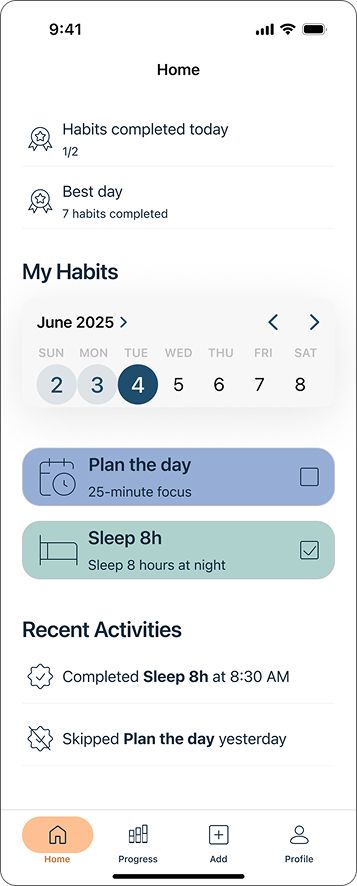iOS Progress Screen
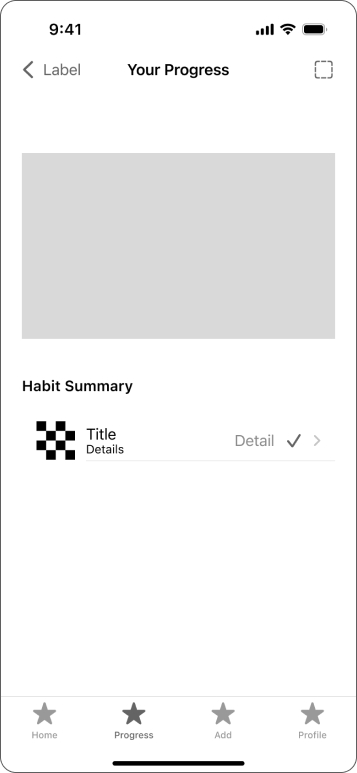 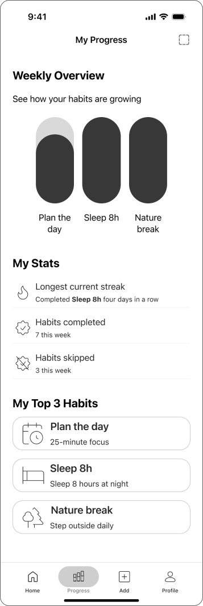 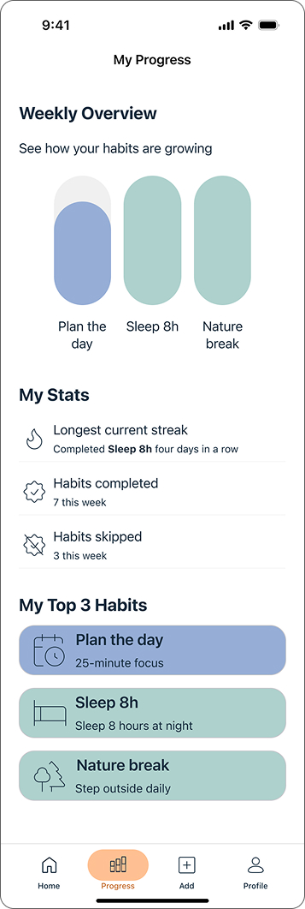Android Home Screen with Stats
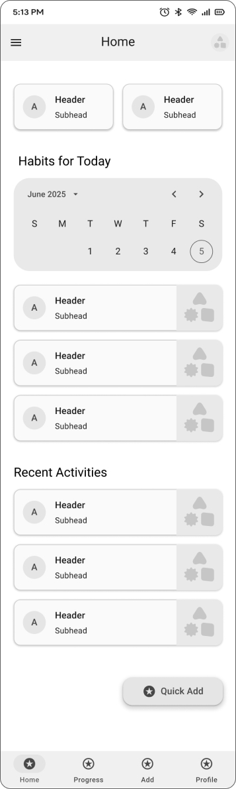 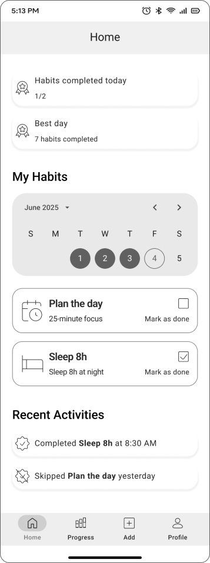 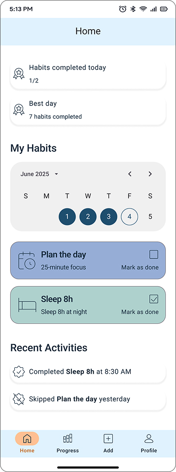Android Progress Screen
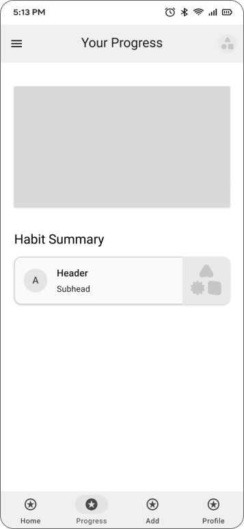 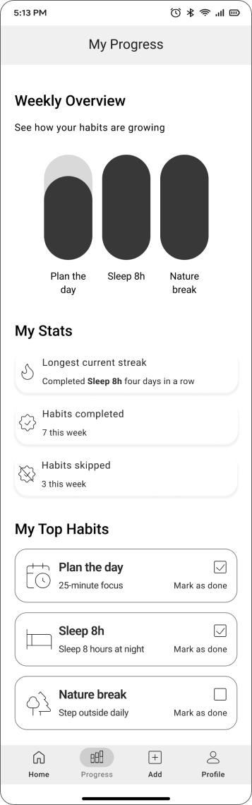 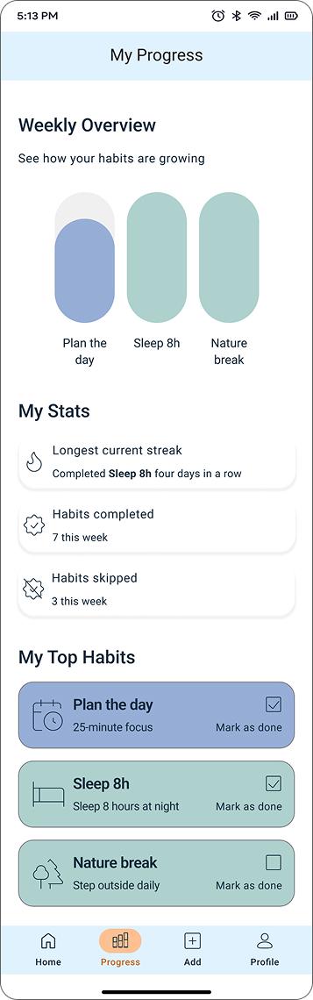Prototyping
Interactive prototypes were built and tested in Figma for both iOS and Android. Feedback confirmed that the design felt minimalistic, intuitive, and supportive, aligning with the original goals.
iOS Mobile Screens
Android Mobile Screens
Insights & Learnings
What went well
Designing for both iOS and Android was a rewarding challenge. User feedback matched my initial goals.
What could be improved
Working on both platforms simultaneously added complexity. Involving target users earlier could help.
Future development
I'd explore adding social features and more adaptive UI solutions.